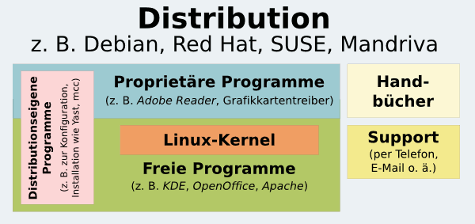

Was ist Linux
Linux, GNU und Distributionen? Was ist denn das? In der Welt des Pinguins gibt es eine Reihe von festen Begriffen, die man sich aneignen sollte, damit man versteht, worum es bei Themen rund um Linux und freier Software eigentlich geht. Dieser Artikel soll einen Überblick bieten und die Begriffe kurz erklären – ohne allerdings die Details zu vertiefen. Weiterführende Informationen kann man in den jeweiligen Artikeln der Wikipedia nachschlagen.
Was ist Linux?¶
Im allgemeinen Sprachgebrauch wird Linux oft als Synonym für GNU/Linux-Distributionen genutzt. Aber eigentlich ist Linux „nur“ der Kernel, also der Kern des Betriebssystems. Dieser Kern stellt eine Vermittlungsschnittstelle zwischen der Hardware des Rechners und der Software dar. Der Kernel ist damit der elementarste und wichtigste Bestandteil eines Linux-Systems. Als Benutzer kommt man mit dem Kernel selbst selten in Berührung.
Was ist GNU? Was die GPL?¶
GNU ist eine Bewegung mit dem Ziel, ein vollkommen freies (im Sinne von „Freiheit“) Betriebssystem zu erschaffen. Im Rahmen dieser Entwicklung wurde auch die GNU General Public License (kurz GPL) entwickelt, unter der diese Arbeiten veröffentlicht werden. Durch diese Lizenz ist es möglich, Entwicklungen aus GNU in anderen Projekten zu benutzen, solange die GPL eingehalten wird. Auch viele andere Projekte aus dem Bereich der freien Software benutzen die GPL. Mehr Informationen zu GNU und dessen Verbindung zu Linux bietet der Wiki-Artikel GNU.
Was ist eine Linux-Distribution?¶
Eine Linux-Distribution ist grob gesagt eine Sammlung von Programmen rund um Linux. Die Entwickler einer Distribution nehmen den Linuxkernel sowie die GNU-Werkzeuge und schnüren dann zusammen mit dem XServer, einer Desktop-Umgebung und Anwendungsprogrammen ihre Distribution zusammen.
Installiert man also eine Linux-Distribution, so installiert man meist mehr als nur ein Betriebssystem: Man installiert gleich eine ganze Reihe von Programmen und Anwendungen, zum Beispiel Apache OpenOffice/LibreOffice und Firefox.
Zudem sorgt der Distributor auch für die Bereitstellung sehr vieler verschiedener Programme für sehr viele verschiedene Zwecke: Fast die gesamte Software in der Linux-Welt ist freie Software. Da freie Software frei verteilt werden darf, ist es dem Distributor möglich, alle diese freien Programme zu benutzen und sie im Rahmen seiner Distribution den Anwendern zur Verfügung zu stellen.

Über eine Paketverwaltung ist es so üblicherweise möglich, tausende von Programmen über wenige Mausklicks zu installieren, ohne dass man im Internet nach Dateien zum Herunterladen („Downloads“) oder einer Installations-Programmdatei (wie „setup.exe“) zu suchen braucht.
Das Ergebnis sind aufeinander abgestimmte Programme aus sicheren Quellen, die zentral vom Distributor gewartet und gepflegt werden, ohne dass sich der Benutzer selbst um Aktualisierungen („Updates“) zu kümmern braucht.

Was ist Debian?¶
Debian  ist die GNU/Linux-Distribution, die als Basis für Ubuntu dient. Bei einer Debian-Standard-Installation wird ausschließlich freie Software verwendet. Wird unfreie Software gewünscht, so kann diese durch explizites Aktivieren der non-free Komponente nachinstalliert werden. Das heißt, Debian trennt Eigentümer-Software (proprietäre Software) strikt von freier Software. Die Distribution wird durch eine Gemeinschaft entwickelt. Diese "Community" aus etwa 2.000 Entwicklern und einer großen Anzahl engagierter Anwender baut Debian fortlaufend aus. Debian gilt allgemein als sehr zuverlässige Distribution.
ist die GNU/Linux-Distribution, die als Basis für Ubuntu dient. Bei einer Debian-Standard-Installation wird ausschließlich freie Software verwendet. Wird unfreie Software gewünscht, so kann diese durch explizites Aktivieren der non-free Komponente nachinstalliert werden. Das heißt, Debian trennt Eigentümer-Software (proprietäre Software) strikt von freier Software. Die Distribution wird durch eine Gemeinschaft entwickelt. Diese "Community" aus etwa 2.000 Entwicklern und einer großen Anzahl engagierter Anwender baut Debian fortlaufend aus. Debian gilt allgemein als sehr zuverlässige Distribution.
Die Distribution gibt es in drei Varianten: Debian Stable, Debian Testing und Debian Unstable. Außerdem gibt es Experimental, die jedoch keine vollständige Paketauswahl anbietet und deswegen keine eigenständige Variante ist. Als Bezeichnung werden zusätzlich auch Spitz- oder Codenamen benutzt, die dem Film Toy Story entnommen sind.
Debian Stable. Diese Version wird zwischen den Hauptversionen (etwa alle zwei Jahre) nur durch Fehlerkorrekturen ("bug fixes") und Sicherheitsaktualisierungen ("security updates") gepflegt. Somit stellt sie eine sehr stabile Betriebsystem-Basis dar, auch für die Nutzung von aktuellen "stable-backports" oder Neuveröffentlichungen von Anwendungsprogrammen. Wird eine neue Stable-Version veröffentlicht, ändert sich der Name des Vorgängers in "Oldstable", dieser wird dann noch mindestens ein Jahr lang mit Sicherheits-Aktualisierungen versorgt, damit die Nutzer selbst den Zeitpunkt für ihre Aktualisierung wählen können.
Debian Testing. Diese Version wird kontinuierlich mit neuen Versionen aktualisiert. Sie ist die Grundlage für die Veröffentlichung der nächsten Stable-Version, in dessen Vorbereitungsphase alle veröffentlichungskritischen Fehler (RC-Bugs) aus Testing behoben werden. In dieser Version befinden sich aktuellere Pakete, die mitunter neuer als die in der aktuell veröffentlichten Ubuntu-Version sind. Für Produktivsysteme, die immer gleichartig benutzbar sein sollen, auf denen also nicht immer wieder Veränderungen durch aktualisierte Programmversionen auftreten sollen, ist Testing jedoch nicht unbedingt geeignet.
Debian Unstable oder "Sid" (wie der böse Junge aus Toy Story, der alle Spielzeuge kaputt macht) ist die Ausgabe von Debian, in der alle neuesten Pakete der Entwickler landen. Die Installation von Sid ist daher eher weniger für Anwender geeignet. Pakete aus Unstable werden nach 10 Tagen, sofern keine Qualitätsmängel entdeckt wurden, automatisch in Testing importiert.
Debian Experimental. Dies ist keine vollständige Distributionsversion, da nur bestimmte (immer unterschiedliche) Pakete bereitgestellt werden. Diese Version dient dazu, weitläufige Änderungen erst testen zu lassen oder vorerst zurückzustellen, ohne dass die Pakete automatisch (wie bei Unstable) nach 10 Tagen in die Testing-Version importiert werden.
Was ist Ubuntu?¶
Ubuntu ist eine Distribution, die auf Debian aufbaut und von Canonical herausgegeben wird. Die meisten Pakete der Ubuntu-Entwicklungsversion werden fortlaufend mit denen der Debian Unstable Distribution synchronisiert, und alle sechs Monate wird eine neue Ubuntu-Version veröffentlicht. Siehe dazu auch den Hauptartikel: Was ist Ubuntu
Was sind Forks einer Distribution?¶
Distributionen, die auf freier Software aufbauen, darf man ganz offiziell kopieren (bis auf eventuell geschützte Markenzeichen, Logos usw.), verändern und wieder verteilen. Abwandlungen einer bestehenden Distribution nennt man Abspaltung (engl. "fork"). Ubuntu ist also ein Fork von Debian.
Was sind die offiziellen Ubuntu-Varianten?¶
Ubuntu selbst liefert verschiedene Varianten, die sich durch die verwendete Desktop-Umgebung, den verwendeten Displaymanager bzw. dessen Vorhandensein und die Auswahl der Standard-Programme unterscheiden:
| Offizielle Ubuntu-Varianten | |||
| Logo | Name | Kurzbeschreibung | Erschienen |
| Ubuntu | mit Unity bzw. GNOME 2 | 4.10 (GNOME) / 11.04 (Unity) | |
| Ubuntu Budgie | mit Budgie | 17.04 | |
| Ubuntu GNOME | mit GNOME 3 | 13.04 | |
| Ubuntu MATE | mit MATE | 15.04 | |
| Kubuntu | mit KDE Plasma | 5.04 | |
| Xubuntu | mit dem schlanken Xfce | 6.06 | |
| Lubuntu | mit dem noch schlankeren LXDE - besonders für ältere Rechner geeignet | 11.10 | |
 | Edubuntu | mit speziellen Anpassungen an den Lehrbetrieb wie beispielsweise Thin-Clients | 5.04 |
| Ubuntu Studio | optimiert für die Multimedia-Produktion | 7.10 | |
| Ubuntu Server | Server-Variante ohne grafische Oberfläche. Serverdienste können bei der Installation ausgewählt werden. | ||
| Ubuntu Kylin | Diese Variante wurde speziell an die Bedürfnisse chinesischer Benutzer angepasst. | 13.04 | |
Installiert man eine dieser Varianten, so installiert man nach wie vor Ubuntu – nur die Pakete, die nach der Installation vorhanden sind, unterscheiden sich. Das bedeutet auch, dass man zuverlässig und fortlaufend mit Fehlerbereinigungen und Sicherheits-Aktualisierugen ("security updates") versorgt wird. Weitere Informationen zu Ubuntu und seinen Varianten findet man im Bereich Einsteiger.
| Ehemalige Ubuntu-Varianten | |||
| Logo | Name | Kurzbeschreibung | Zeitraum |
| Ubuntu Netbook Remix | Ubuntu-Variante mit angepasster Bedienoberfläche für Netbooks. Später unter Ubuntu Netbook Edition bekannt | 9.04 bis 11.04 | |
| Mythbuntu | optimiert für "Home Theater Personal Computer" (HTPC). Siehe MythTV | 7.10 bis 16.10 | |
Was sind die inoffiziellen Ubuntu-Derivate?¶
Inoffizielle Ubuntu-Derivate sind Abwandlungen von Ubuntu, die von Dritten zusammengestellt werden. Die Ziele sind unterschiedlich gesteckt. Manche Entwickler dieser Derivate wollten eine vollständige und eigenständige Distribution auf Basis von Ubuntu erstellen, zum Beispiel Linux_Mint oder kurzzeitig SimplyMEPIS (v6.5). Andere Hersteller passen Ubuntu für einen ganz bestimmten Einsatzzweck an. Dies sind beispielsweise die "Ubuntu Media Center"-Derivate. Diese enthalten von Haus aus Software wie z.B. MythTV, die ein Linux in ein Media Center verwandeln. Wiederum andere benutzen die Funktionen der Live-CD, um angepasste Live-CDs zu erstellen. So gab es eine Live-CD für Netzwerkspezialisten, die auf der CD sofort verschiedene Werkzeuge finden, um ein Netzwerk zu analysieren und Fehler oder Schwachstellen aufzuspüren.
All diese Projekte haben eines gemeinsam: Sie werden nicht offiziell unterstützt oder haben im Fall der auf Ubuntu basierenden Distributionen gar nichts mehr mit Ubuntu zu tun. Manche dieser Projekte hinken auch Ubuntu hinterher. Sie basieren also auf älteren Ubuntu-Versionen. Nichtsdestotrotz sind die offiziellen Paketquellen immer noch Basis aller dieser Derivate.
Inoffizielle Ubuntu-Derivate sind im Artikel Alte Hardware/Ubuntu und in der Wikipedia beschrieben.
Links¶
Andere Distributionen - mehr Details zu diesen
Einführung für Linux Umsteiger - Ubuntu im Vergleich mit anderen Distributionen
Warum der Pinguin mein bester Freund geworden ist
 - Erfahrungsbericht zu Linux
- Erfahrungsbericht zu Linux
- Erstellt mit Inyoka
-
 2004 – 2017 ubuntuusers.de • Einige Rechte vorbehalten
2004 – 2017 ubuntuusers.de • Einige Rechte vorbehalten
Lizenz • Kontakt • Datenschutz • Impressum • Serverstatus -
Serverhousing gespendet von